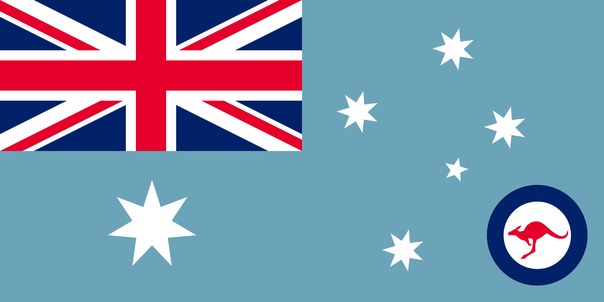
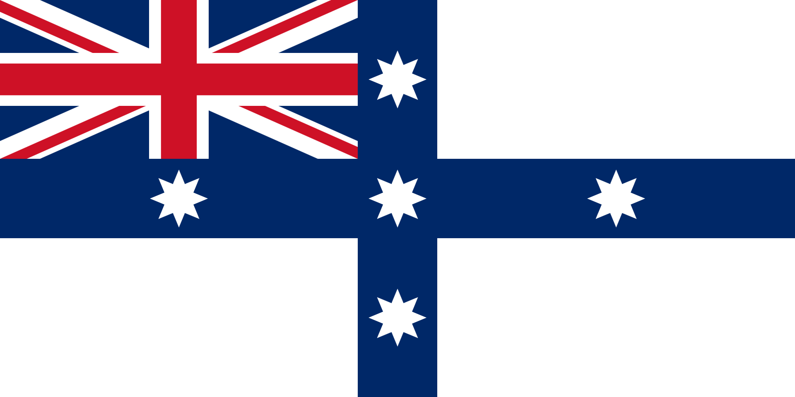

Above is the cool new flag constellation editor I've been working on, which is designed in a similar way to
the US flag star modifying tool I made in 2020. This one lets you drag around a celestial globe and modify cutoffs for the correspondance between the sizes of stars in constellations on flags and the magnitudes of those stars in real life.
As an example, the flag of Australia has the Southern Cross on it, with Alpha through Delta Crucis
[1]Properly Acrux, Mimosa, Gacrux, and Imai, with Epsilon Crucis being also called Ginan. depicted as larger seven pointed stars, while Epsilon Crucis is depicted with a smaller five pointed star. On the left though is another even larger seven pointed star located relative to Crux in a direction where Beta Centauri would be found. However, the official Australian Flag booklet never mentions Beta Centauri, merely calling it the "Commonwealth Star".
Anyway, here's how the Australian flag looks if you position the stars of Crux where they really are on an orthographic projection, with the position and rotation fit to minimize the $MSE$ from the original flag:
It's fairly close, with the $\sqrt{MSE}$ being only 0.4469% the height of the flag
[2]or width of fly, rotated in a way that puts Gacrux in the same vertical line as Acrux.
I also determined cutoffs for sizing of the stars on each of these flags. Like, on the australian flag the brighter Acrux generally depicted as larger than the dimmer ε Crucis, with two different star sizes for the Southern Cross (and two different numbers of points), while New Zealand uses three different star sizes for Acrux through Imai, and ε Crucis isn't even depicted, implying an effective size of zero.
And of course, Australia and New Zealand aren't the only countries that have a Southern Cross on their flag: 5 countries and many subnational units use it, in fact, the Wikipedia page "Flags depicting the Southern Cross" lists 113 such examples. I haven't included every flag from that Wikipedia page in this tool but I'll probably add more as I think to, as well as any other flags I come across that have constellation on them.
But which one is the best?
Based on the SVG versions of the flags found on Wikipedia that I've included in this tool (I haven't gone through to check the original specifications for all of them), the Royal Australian Air Force Ensign has the smallest $\sqrt{MSE}$ of the flags with Crux, while the largest is the flags which just lay the stars on an orthogonal cross like Niue and the Australian Federation Flag (an old design that was proposed as a flag of Australia in the 1830s).


Left: Royal Australian Air Force Ensign Flag, Right: Australian Federation Flag
The most interesting flag in this whole set is probably Brazil, for which it is also somewhat complicated which stars on the flag even correspond to which real stars. Officially, the flag of Brazil features stars from nine constellations, though some of these only get one star each. The prominent ones, from left to right, are Canis Major, Crux, Triangulum Australum, and Scorpio, each inverted from how they appear in the night sky because the constellations are shown as they would appear on a celestial globe from outside.
I made an animation showing the star correspondance in 2020:
Most of the constellations are mostly reasonable, though in proportion to each other they need to be rescaled a lot, so there's no real way to recreate something similar with the tool at the top.
Anyway, here's the flags of Australia if it was in the Northern Hemisphere and Alaska if it was in the Southern Hemisphere:
Some images retrieved from Wikimedia Commons.